1. Design Overview
The WINEHOUSE is the ecommerce website that offers variety of wines for its customers. I designed the website mockup in adobe XD in 1366px screen width and take advantage of the Photoshop to manipulate images and build portfolio images. 8 images have manipulated and mixed and combined to produce the web site images. I used 12 column grid system to align and size objects. I allocated 128px offset in each side of a page and 65px for each column and 30px gutter between each column.
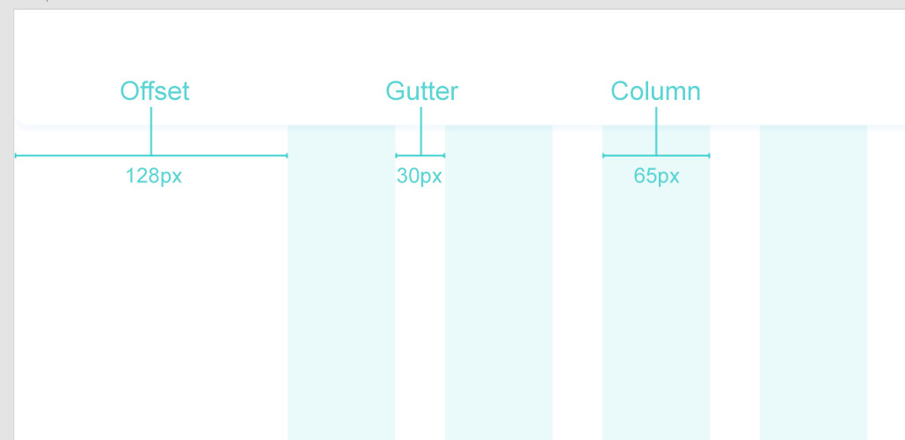2. Color Palette
I used below color palette in the website.
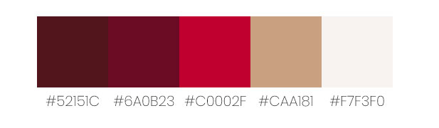3. The Wine House Logo
I found the below logo in SVG format and choose it as the main logo of the website. I manipulated the logo and remove the bottle and black background from it and change the WINEHOUSE text color to follow the selected color palette.
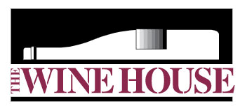Source : https://worldvectorlogo.com/logo/the-wine-house
4. Image Manipulation
The Winehouse Header image
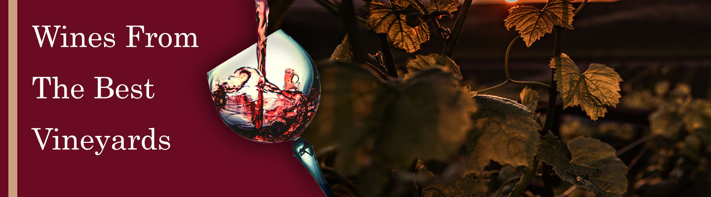The header image is combination of two images and some typography and effects. First, I download the wineglass photo (4928 × 3264) from unsplash.com and I opened the image in photoshop and remove the gray background with Lasso tool. Then I search the unsplash.com again for vineyard photo and found the vineyard photo that had closeup view of vineyard trees. I imported the image into photoshop. I created the art bored (1440 x 400) and transfer above two images into the artboard and with free transform tool I set their size that become fit to the canvas. I choose the area of the vineyard image that I like to appear in the final header image. I adjust the color levels of vineyard image by adding adjustment filter above its layer and manipulate the RGB color of image to it became darker. Then from the image menu > image rotation, I select the flip horizontal to flip the photo and move it to the left side of vineyard image.
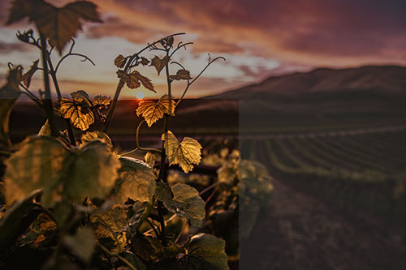Original Size: 8192 × 5461, Source : https://unsplash.com/photos/V0UvHFGSFGI
Wine glass image
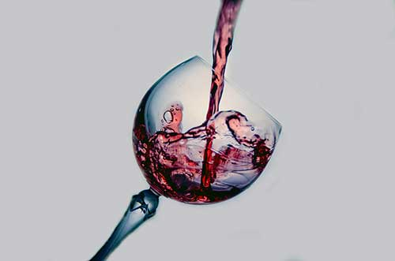Original Size: 4928 × 3264, Source : https://unsplash.com/photos/0dhIwRsPV74
Download PSD file after background remove
I have added three-layer style (fx) to the wine glass layer. 1px inside stroke to hide the extra whiteness around glass. %75 Drop shadow to create shadow on its background and it looks more realistic and % 15 satin. I added typography with Century font and white color to become more formal and stylish. In the end I added the very thing vertical ribbon that I took the color from the selected color pallet. Finally, I save this heading image with JPEG Hight and quality is 60 and final fine size is 103.3KB.
Call to action image
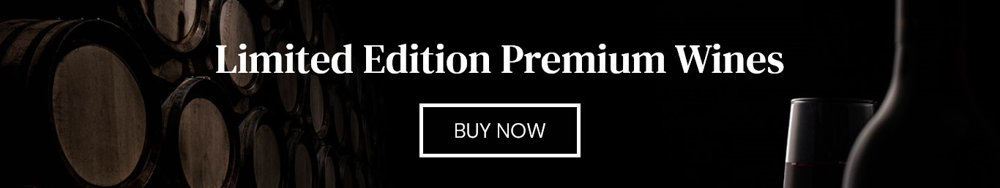The call to action section has designed with combination of two image of on the right and the other one on the left side. I make a new a file in photoshop and set the artboard width to 1440px and its height to 400px, then import two image files in that, with Free Transform tool (Ctrl + T) I changed the size and match it with the artboard size then I used the gradient tool to create dark space between these two images therefore I have more dark space to put the white text on it in the wireframe. Finally, I saved it as web jpeg and the final size is about 40KB.
The image in “How we started” section:
The below image is combination of four images. First, I imported the main image and added another layer above it and add one color of the color pallet and change the color mode to Hue and add 80% opacity to that then I imported other three images and I used collage technique and with rulers tool I divided the artboard into 2 different parts and create extra spaces for those images. I create a black frame over all photos and change it opacity to 50% then I saved this as web jpeg and the final size of image is 260KB.
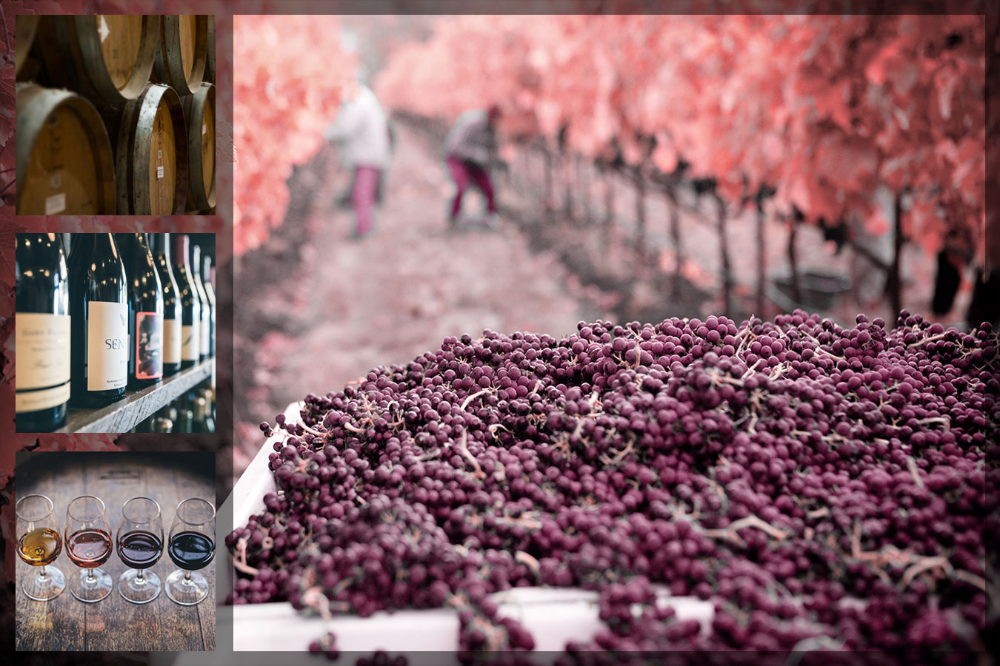
Download PSD file
Source - main image
Source - image 1
Source - image 2
Source - image 3
The photo in “Strolling through our vineyard” section :
In this section I imported below photos and mix them together. I have done level adjustment and Hue/Saturation adjustment on them and change the image mode to Hue for the second photo. I add another cover layer on the top of other layer and set the color and set the opacity in 40% and fill to 30%. Finally, I saved it as web and change the width to 500px and final image size is 60KB.
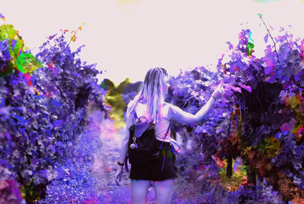 Download PSD file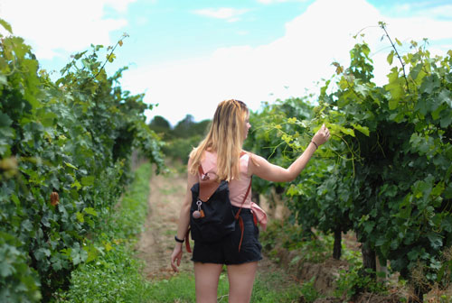 Source
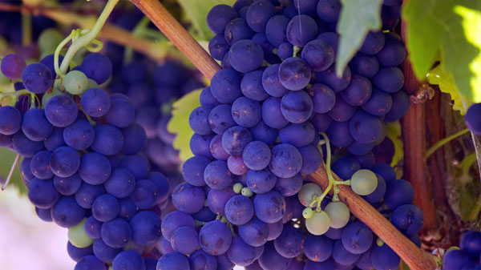 Source
Wine bottles images manipulation
I manipulated all bottles in order to make a background for them and fit them in the center of their frame. Each wine bottle image take a about 60 KB ~ 80 KB and saved as Web PNG file to take advantage of transparency in the PNG format.
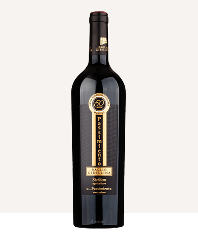PSD file (ALL wine bottle edited)
SVG icons color changed and Imported:
I used small SVG free icons to make the design meaningful. Usually icon files have very low file size. For example, shopping cart SVG file just occupied 4KB, I could change their color when I import them to adobe XD. Below icons found in ww.freesvg.org.


All SVG icons belong to payment gateways are free and founded from Wikipedia images.

5. Website Mockups
For designing the mockups, I used Adobe XD and I designed four artboards which all for web size 1366-pixel width. I choice the mentioned color pallet as well.


6. Animated gif
I designed the animated banner in photoshop with take advantage of photoshop timeline, I designed the main frame and move the frame horizontally to appear on the frame then write the text on that. Then I set the delay time for each frame. Finally, I save it as selective Gif format and final size is 24KB.
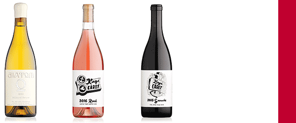